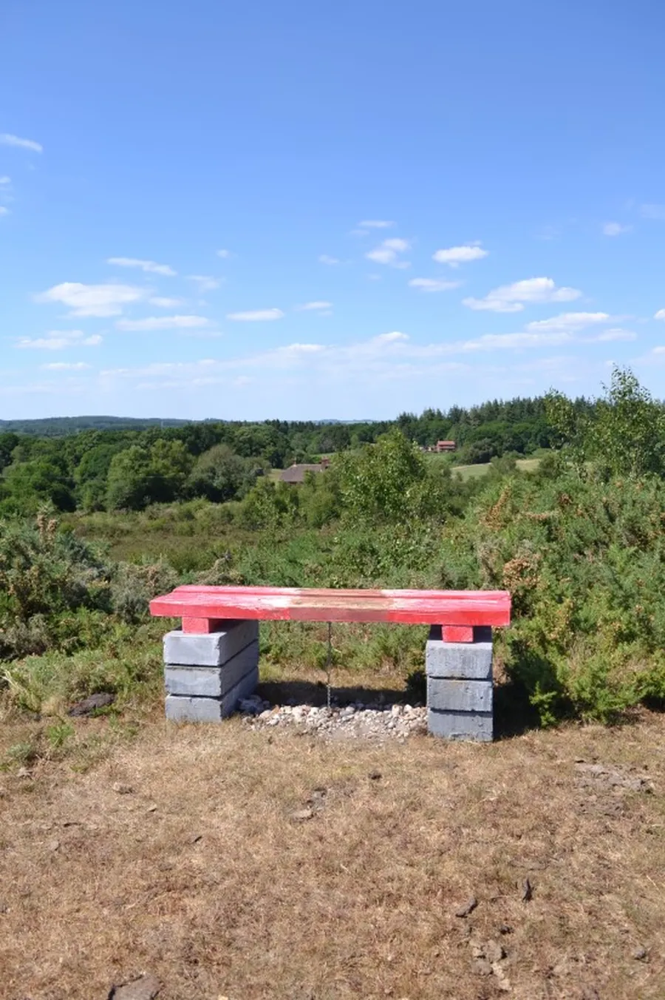
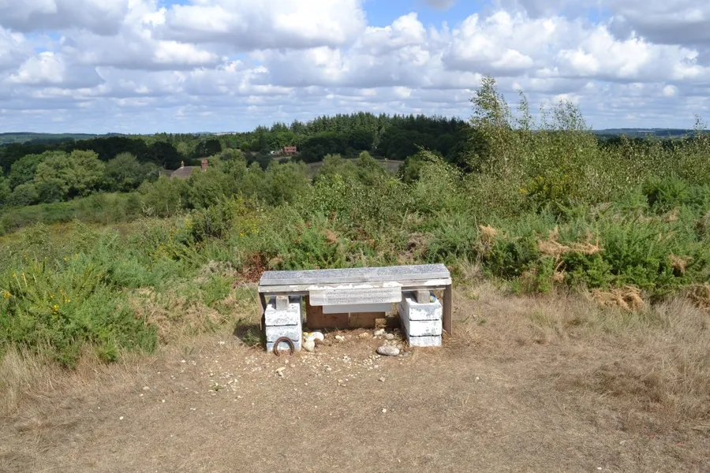
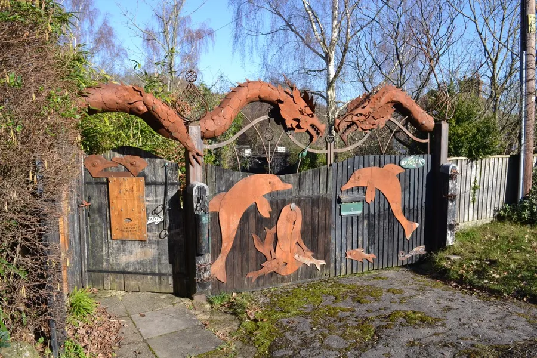
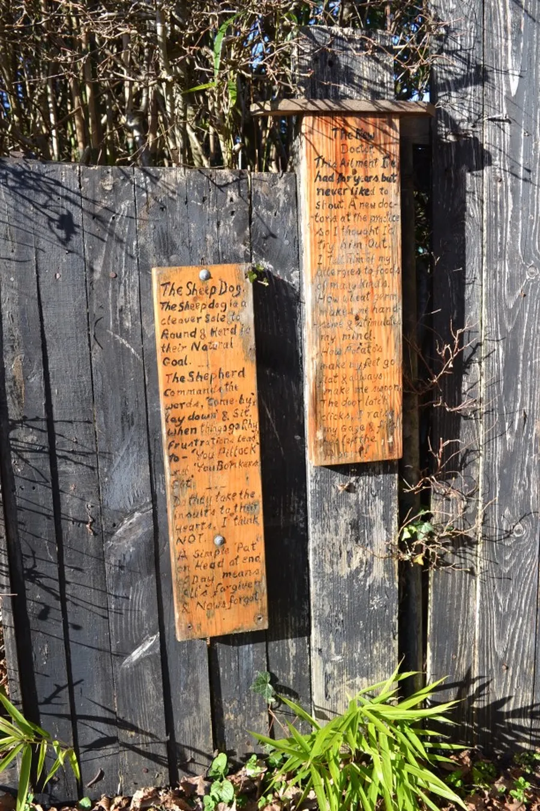
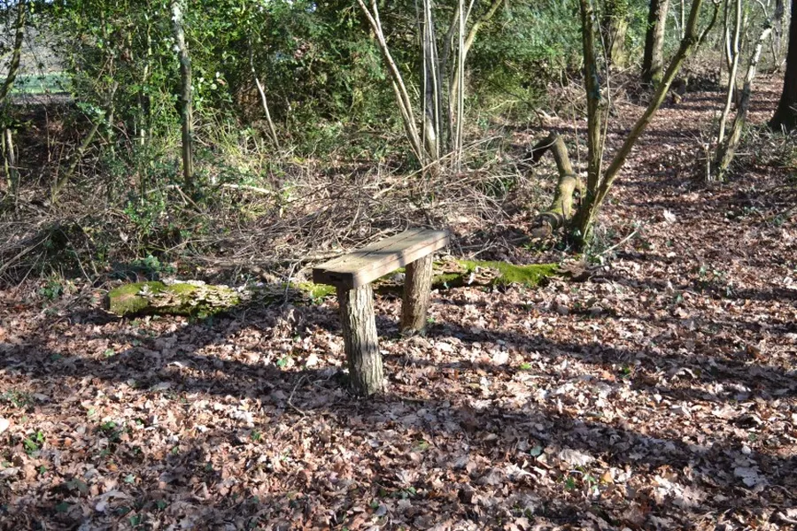
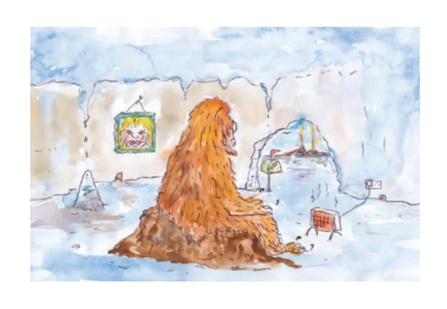
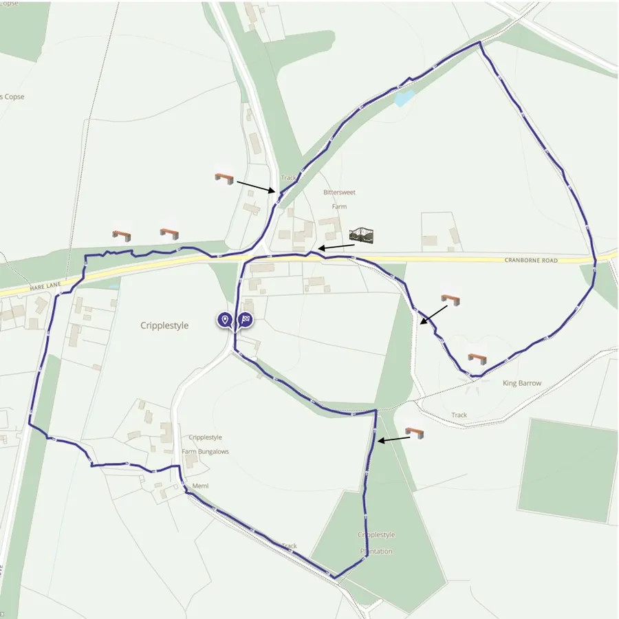

The Cripplestyle Benches
by Adrian King

If you travel from Alderholt to Cranborne just before you reach Cripplestyle on the left behind the hedgerow you will just make out a small hill. It has the name King Barrow. It is a popular destination for short walks with a panoramic view of the surrounding area when you reach the top.
At 324ft King Barrow is the highest hill in the district. The area consists of 23.62 acres of common land registered as units CL 253 and CL 162. The hill itself is not a tumulus but a natural mound.
On a clear day it was at one time possible to see the white cliffs of the Isle of Wight. I have in the past seen the flare stacks of the oil refinery at Fawley. It was also possible under the right conditions to see the top of Salisbury Cathedral spire. But the trees have grown so much that the distant view is now restricted. Clear cutting recently by the Cranborne Wild Heath Project has made new views possible.

On the Thursday following Whit Sunday the congregation of Cripplestyle Congregational Church processed to the top of the hill for an open-air service. During that day from sunrise to sunset a flag flew with the message Feed My Lambs. This was to mark the anniversary of the opening of the Ebenezer Chapel in 1807.
From the Old English meaning cyning ‘king’ and beorg ‘barrow or hill.’ past forms of the name are
| Kyngbor’ghe | 1404 Cecil |
| Kingbarowe | e17 CecilMap |
| Kingborrowe Heathe | 1619 CH |
| King Barrowe — Patch and Piece | 1846 TA |
| King Barrow Hill | 1869 Hutch |
The current Ordnance Survey name is King Barrow.
The Local Defence Volunteers or LDV’s held exercises on King Barrow. There is a legend that Uther the father of King Arthur is buried on the hill. In 1940 when the Home Guard were dug-in no significant finds were made.
Between Thursday 28th and Sunday 31st May 2020 a bench was placed on the hill. The seat part was painted red and rested on breeze blocks being secured by a chain mounted on the centre of the seat and buried in the ground below. There was an inscription written on the seat.

By November 2020 the bench had been painted white and fixed to the breeze blocks without the need for the chain. The inscription that had been written on the top was now written on a board secured to the front of the bench. There were now three more poems written on the top of the bench.

But who could be responsible for thoughtfully placing this seat on King Barrow? Research discovered that it was Martin Hollister who was a poet who lived on Cranborne Road between Bittersweet and Sunny Corner. His gate was adorned with dragons and dolphins. Jean Bell said that there were spectacular iron dragons visible over the hedge including a 3-headed one and one with babies. There are two narrow panels on the left of the gate containing poetry.


Martin was not only responsible for the bench on King Barrow but other benches around Cripplestyle some of which had poetry attached. There are two benches alongside the path he created in the strip of woodland between Cripplestyle crossroads and the Verwood turning which is now mostly underwater.

Martin placed lengths of fallen branches as edging to the path and drained water away from paths. On King Barrow by January 2021 three more poems had been written and attached to a board on the back of the seat.
Over the next year and a half more boards were attached to the bench with more poems. In all there were over twelve poems on the bench. But by 27th December 2022 the bench had deteriorated and the poems were becoming faded and unreadable. The plywood panels were delaminating and by 6th February 2023 panels were beginning to drop off.
By the end of May 2023 all the panels had dropped off and later some time in June 2023 the bench was removed. Martin sadly died on 31st December 2022 but we still in pictures have the legacy of what his benches once looked like.
I have copies of all the poems if anybody is interested.

Michael
Michael the Abominable Snowman has got no mate,
In his icy cave he ponders his lonely fate,
He writes his “love wishing” letters to Heart Club columns,
And sits alone all day to plan a hopeful date.
This was one of the first poems on the King Barrow Bench.
